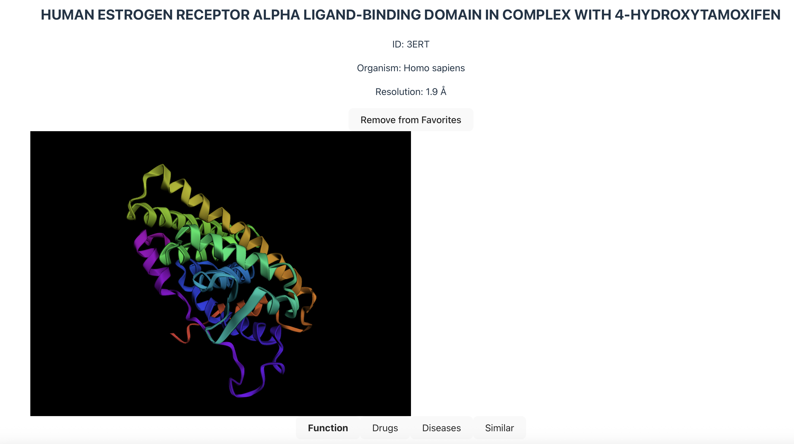
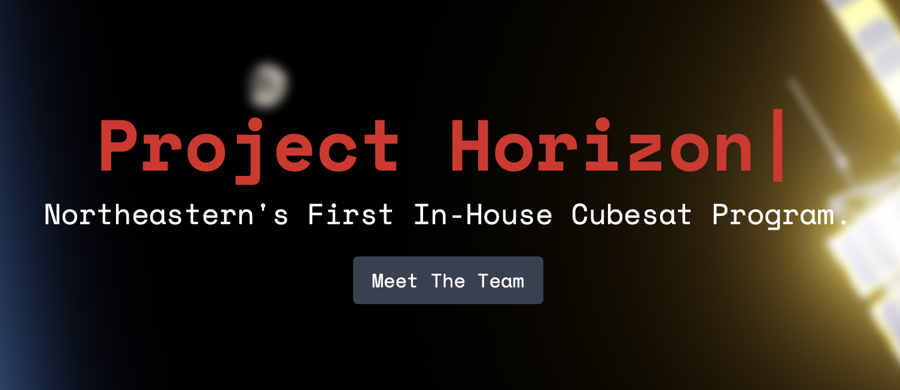
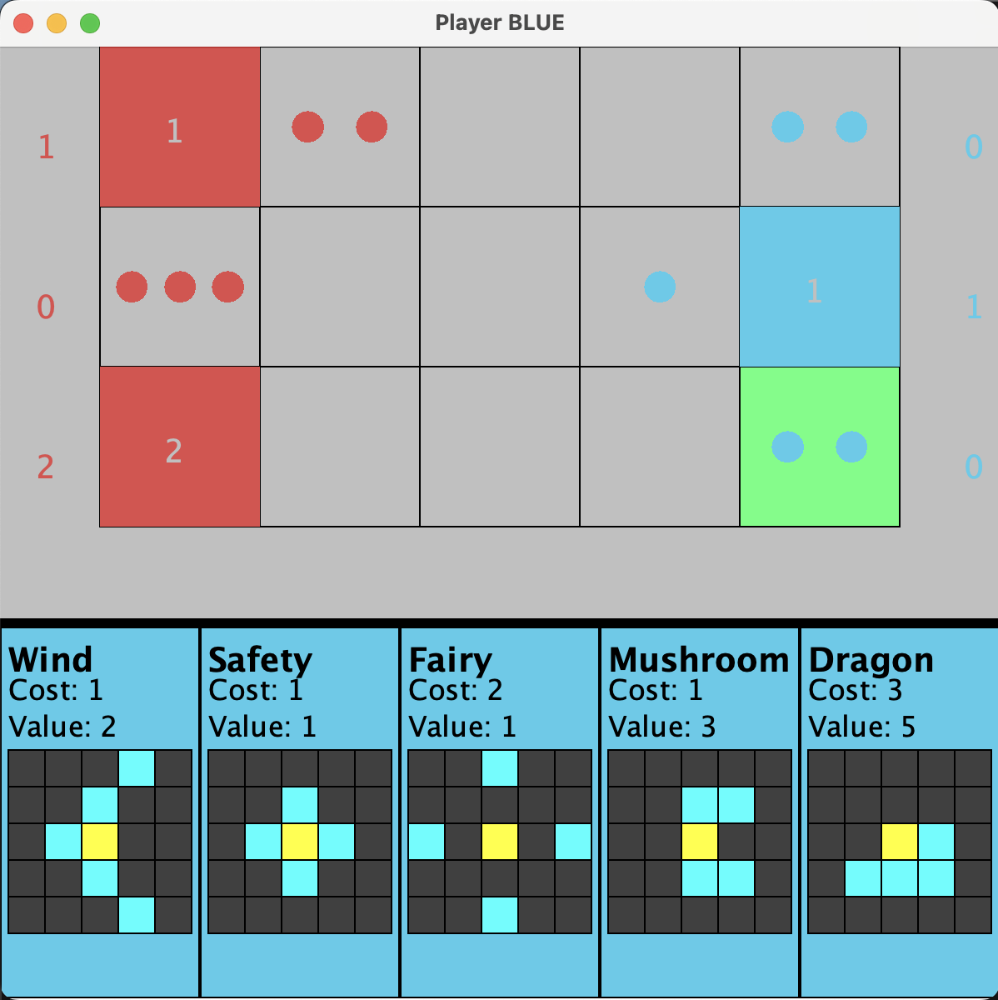

About
I'm Meredith, a third-year student at Northeastern University studying Computer Science and Behavioral Neuroscience with a minor in Mathematics. Through the PlusOne program, I'm also pursuing an accelerated M.S. in Artificial Intelligence with a concentration in machine learning, finishing in Spring 2029.
I'm passionate about applying software and machine learning to biology and neuroscience. Through co-op experiences in research labs and software development, I've built cluster job orchestration with automatic failure recovery, automated multi-step molecular simulation pipelines, written agentic AI tools that assemble computational workflows, and shipped backend features in Go on a product team. I prioritize clean, tested, scalable code and thrive working across interdisciplinary teams.
I'm currently seeking co-op and internship opportunities for January – June 2027, particularly in software engineering, research engineering, or health tech where I can contribute to meaningful, innovative work.
Outside of academics, I recharge with yoga, surfing, and walking my dog on the beach.
Skills and technologies
- Java
- Python
- Go
- TypeScript
- JavaScript
- SQL
- Bash
- C++
- React
- React Native
- Spring Boot
- FastAPI
- Express
- Hono
- Dask
- scikit-learn
- OpenAI API
- PostgreSQL
- Supabase
- pgvector
- Git / GitHub
- pytest
- Jupyter
- Sphinx
- Intellij IDEA
- PyCharm
- VS Code
- AWS (ECS, ECR, EC2, RDS, S3)
- Docker
- Terraform
- GitHub Actions
- SLURM
Experience
Building a Go and React college admissions platform for Inspirate Consulting that replaces email-based coordination between students and counselors. Team of 5 engineers, 2 tech leads and 4 designers.
- Implemented typo-tolerant fuzzy college search with PostgreSQL pg_trgm
- Developed application tracking, college ranking with input validation, and role-based student and counselor views
- Built a Go REST endpoint with the AWS SDK to upload and serve learning videos from S3
- Ship every feature through pull request review by the tech leads
- Built an end-to-end molecular imprinting simulation pipeline (polymer crosslinking, template removal, catalytic substitution, multi-ligand docking, QM/MM analysis) with GROMACS, Packmol and ORCA
- Engineered a SLURM + Dask job manager that runs as many simulations in parallel as the cluster allows, detects failures, restarts jobs and submits each next step automatically, replacing manual tracking of 24+ hour jobs
- Developed an agentic AI tool (OpenAI API) that selects and sequences GROMACS and ORCA tools to assemble multi-step workflows from a researcher's goal
- Wrote pytest suites run automatically in GitHub Actions CI
- Analyzed visitor demographics with SQL and Apache Superset, surfacing trends that guided targeted outreach
- Integrated and managed a PostgreSQL database and deployed Superset with Docker for interactive stakeholder dashboards
Projects

Full-stack mobile meal and workout planner with an agentic AI layer that generates personalized weekly plans from macro targets, dietary preferences and essential amino acid completeness.
- Hono/TypeScript REST backend with a class-based service layer and shared types between frontend and backend; Supabase with pgvector; JWT auth
- Expo / React Native onboarding that captures diet, deficiencies, injuries, cooking constraints and workout preferences
- In progress Groq-powered agentic recommendation engine with tool use, real-time SSE streaming, injury-aware workout scheduling, and a FastAPI contextual bandit sidecar that adapts recommendations over time

Full-stack platform that brings protein structure, function, drug interactions and disease associations into one interface.
- Parallel async fan-out across four biomedical APIs (RCSB, UniProt, ChEMBL, Open Targets)
- ML similarity search with Meta's ESM-2 protein language model, served from a FastAPI sidecar and queried by pgvector cosine similarity
- Spring Boot and React with JWT auth and a hybrid JPA/JdbcTemplate persistence layer on Supabase
- One-click AWS deployment with GitHub Actions: Terraform-provisioned infrastructure, commit-tagged Docker images in ECR, and EC2-backed ECS with RDS

Time synchronization for CubeSat flight software at Northeastern’s Satellite Lab, built in C++ on NASA's F Prime framework.
- Microsecond-accurate sync in two modes: ground station commands and GPS PPS signals
- Integrated Linux PPS kernel support for reliable deployment on Raspberry Pi

Co-developed a multiplayer Java game.
- MVC architecture: a core model, a GUI view, and multiple controllers so several players can play
- Object-oriented design that keeps the code organized and easy to extend
Get in touch
I'm actively looking for co-op and internship opportunities for January – June 2027. Whether you have a role in mind, want to collaborate, or just want to connect, feel free to reach out.
mewanta@icloud.com